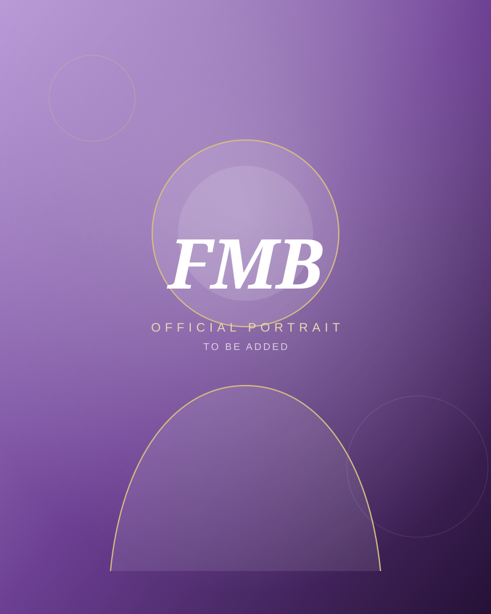

01
Strategic communications company
SENZ
A strategic communications company designed to make people, brands, and ideas clearer, sharper, and harder to ignore.
The personal world of Francine Marie Bautista
Founder. Author. Speaker. Brand strategist. Creative director. Storyteller. Cultural advocate.

My point of view
“Visibility is not simply being seen. It is being understood, remembered, and trusted for the right reasons.”
About me
I am Francine Marie Bautista, also known as FMB, a Filipina creative director, strategist, entrepreneur, photographer, storyteller, PR practitioner, branding consultant, and founder.
My work lives where branding, communications, culture, identity, public perception, and community impact meet. I help people, brands, communities, and ideas become clearer, more visible, more memorable, and more trusted.
I care about the story underneath the design, the meaning behind the message, and the long-term reputation created by every public decision. Whether I am building a company, shaping a campaign, documenting culture, teaching, or creating a visual world, I begin with one question: what should people understand and feel?
With Love, FMB is not only a portfolio. It is my creative home, a place for my work, reflections, projects, books, photographs, and the ideas I want to leave behind.
Selected worlds
Strategic communications company
A strategic communications company designed to make people, brands, and ideas clearer, sharper, and harder to ignore.
Culture and language
A digital cultural platform for history, language, memory, learning, and community contribution.
AI learning
A selective learning environment built to help people understand and use artificial intelligence with purpose.
Education
An emerging school and education concept focused on future-ready learning, thoughtful technology, and human potential.
Notes from FMB
Let us create something meaningful
The official email address and social links will be added here before the public launch.
Return home